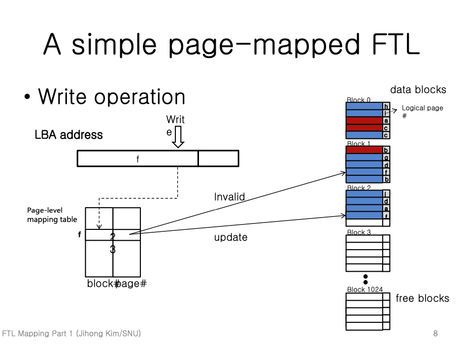

참고한 것들
이게 뭐지
- Host 에서 사용하는 주소인 Logical Block Address (LBA) 를 실제 데이터가 저장된 주소인 Physical Block Address (PBA) 로 바꿔주는 작업이 필요한데
- 아마 이러한 LBA 가 존재하는 이유는 데이터의 실제 주소가 바뀌어도 Host 에서는 변경된 주소가 아닌 기존의 주소를 그대로 사용하게 해주기 위함이리라.
- HDD 는 overwrite 가 가능하기 때문에 LBA 어레이를 사용하는 것이 효율적이었지만 SSD 에서는 (overwrite 가 불가능하기 때문에) 다소 문제가 있다.
- 고 하더라. 어떤게 문제가 되는지는 깊게 들어가 보지 않았다.
- 따라서 SSD 에서도 HDD 의 LBA 시스템을 동일하게 지원해주기 위해 도입된 것이 Flash Translation Layer (FTL) 이다.
- 이놈은 별도의 HW 가 아닌 SW layer 로, SSD Controller 펌웨어에 포함된다.
주소 변환 과정 (Logical block mapping)
- 당연히 LBA 와 PBA 의 매핑을 테이블 형식으로 저장하게 된다.
- 이 테이블은 SSD 내의 RAM 에 저장되고, 전원 차단시에도 이 내용을 유지하기 위해 저장공간 (플래시 메모리) 에도 저장한다.
- 아마 오버프로비저닝 된 공간에 저장되겠지
- 이 테이블은 L2P Table 이라고도 불린다.
- Mapping table 을 구현하는 방식은 여러 가지가 있을 수 있다:
Page level mapping
- 단순하게 생각하면 page 별 LBA-PBA 관계를 저장할 수 있을 것이다.
- 구체적인 write operation 작동 방식은 다음과 같다:
작동 방식

- (주의 - 위 예시에서 테이블에 적힌 2 와 3은 무시하자.)
- 일단 LBA 의 앞부분 일부를 읽어 테이블 index 를 알아낸다. (이 index 값을 Logical page number 라고도 부른다.)
- 위의 예시에서는 이 값이
f이다.
- 위의 예시에서는 이 값이
- 그 다음, 이 index 의 테이블 데이터 (
[Physical block num, Page offset num]) 값을 읽어 온다.- 위의 예시에서는
[1, 3]이다.
- 위의 예시에서는
- 해당 Physical block num 의 block 으로 가서 Page offset 에 해당하는 페이지를 찾는다.
- 위 예시에서는
1번 block 에서3번 page 를 찾는다.
- 위 예시에서는
- 해당 페이지는 invalid 처리한 후에, 새로운 free page 를 찾아 write 를 하고, 테이블 entry 를 수정한다.
- 위의 예시에서는 테이블 entry 값이
[1, 3]에서[2, 3]으로 변경된다.
- 위의 예시에서는 테이블 entry 값이
- 그럼 write 작업은 완료되고, 이 과정에서 생성된 invalid page 는 추후에 GC 로 사라지게 될 것이다.
문제점
- 제일 큰 문제는 SSD 에는 수많은 page 가 있기 때문에 테이블의 크기가 너무 커지게 된다는 것이다.
- 테이블의 크기가 커진다는 것은 다르게 말해 RAM 의 용량을 많이 차지하게 된다는 소리와 같다.
- 뭐 커져봤자 얼마나 커지겠어… 라고 하지만 만일 32TB SSD 에 페이지 크기가 8KB 이고 테이블 entry 사이즈가 4byte 라면 테이블의 크기는 16GB 가 된다. (직접 계산해 보시라.)
Block level mapping
- 반대로 block 별 LBA-PBA 관계를 저장하면 어떻게 될까.
- 당연히 page 별로 entry 가 필요한 것이 아니고 block 별로 entry 가 필요할 테니 경장히 많은 공간은 절약될 것이다.
작동 방식

- 이번에는 LBA 의 앞부분 일부를 읽어 테이블 index 를 알아내고, (이 index 값은 Logical block number 라고도 부른다.) 나머지 뒷부분 일부를 읽어 page offset 을 알아낸다. (즉,
[Logical block number, Page offset num]을 알아낸다.)- 위 예시에서는
[d, 3]이다.
- 위 예시에서는
- 그리고 이 index 의 테이블 entry (
[Physical block num]) 값을 읽어 온다.- 위 예시에서는
1이다.
- 위 예시에서는
- 새로운 free block 를 찾아 동일한 offset 의 page 에 write 를 하고, 테이블 entry 를 수정한다.
- 위의 예시에서는 테이블 entry 값이
[1]에서[3]으로 변경된다.
- 위의 예시에서는 테이블 entry 값이
- 또한 기존에 page 가 위치하던 block 에서 변경된 page 이외의 page 전부를 새로운 block 으로 전부 복사한다.
- 위의 예시에서는 block
1의 page offset0,1,2데이터들을 block3의 page offset0,1,2로 복사한다.
- 위의 예시에서는 block
- 기존에 page 가 위치하던 block 의 모든 page 를 invalid 처리한다.
FAQ…
- 여기까지 오면 머릿속에 물음표 부하가 걸릴 것이다.
- 일단 왜 free page 가 아니라 free block 을 찾지? 하는 의문과
- 왜 변경되지 않은 page 까지 전부 복사하지? 하는 의문
- 이건 변경되지 않은 page 에 대한 접근을 생각해 보면 답이 나온다.
- 위의 예시에서 LBA
[d, 3]을 변경하는 작업을 한 뒤에 변경되지 않은 page 를 복사해오지 않았다고 해보자. - 그리고 LBA
[d, 2]값을 read 하는 작업을 한다고 해보자. - 그럼 마찬가지의 과정으로 테이블에 접근해 테이블 index
d의 entry 인 Physical block number 를 알아내게 된다. - 근데 문제는 이 값이 기존의
1이 아닌3으로 변경되었다는 것이다. - 그래서 Physical block number
3으로 가서 LBA 로 page offset 인2로 page 를 찾아 봤자 (page 들을 복사해오지 않았기 때문에) 원하는 놈은 거기에 없다.
- 위의 예시에서 LBA
- 즉, 테이블의 Physical block num 을 변경하는 것은 해당 block 의 모든 page 들의 LBA-PBA 관계에 영향을 미치기 때문에 변경하지 않은 page 들도 전부 복사해 오는 것.
문제점
- 위 과정은 딱 봐도 너무나 비효율적인 것처럼 보인다.
- Page 들을 복사하는 것 자체부터 수많은 WA 를 유발하고
- Page 들을 복사하는 과정에서 Invalid page 가 수도 없이 생기기 때문에 당연히 GC 도 자주 발생하게 될 것이기 때문.
Hybrid log-block FTL
- Page 별 테이블을 구성하는 것과 block 별 테이블을 구성하는 것에는 trade-off 가 있고, 이들 간의 타협점을 찾는 것이 중요하다.
- 따라서 이 둘을 잘 조합하는 Hybrid 방식이 고안되었는데, 그 중 많이 알려진 방법이 이 Hybrid log-block FTL 방식이다.
이 부분은 추후에 추가될 예정입니다.
다만..
- FTL 의 알고리즘은 성능 향상에 큰 영향을 미치므로, 각 회사별 영업 비밀과 같다.
- 즉, 각 회사별로 알고리즘이 상이하며, 구체적으로 어떻게 작동하는 지는 잘 공개하지 않는다고 한다.